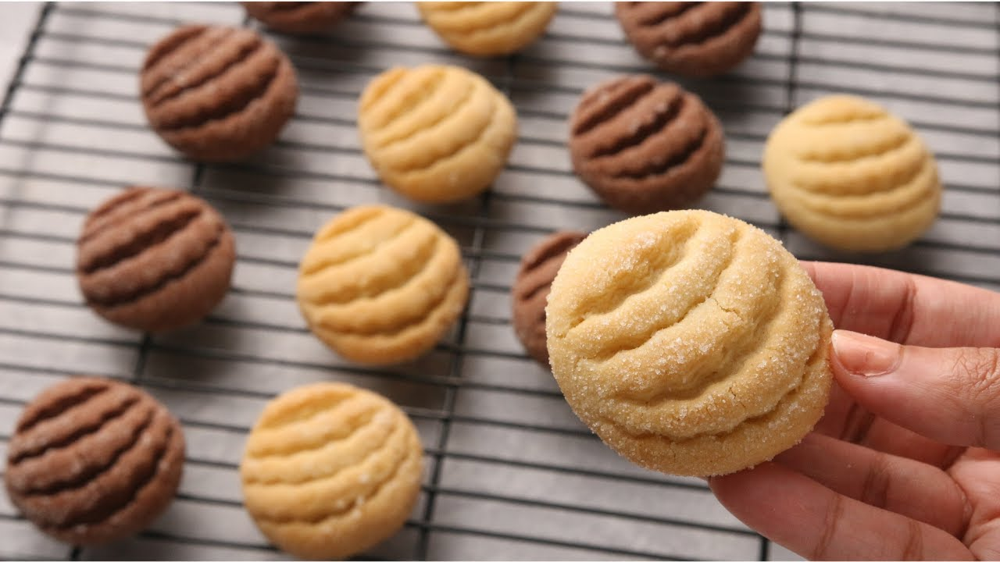

10 minute biscuits

Description
A recipe for making easy economical simple biscuits. The 10-minute biscuits recipe uses four ingredients that are in every house and is beginner friendly!
Aya Habib's Video
Ingredients:
- 1 and 1/2 cups of flour
- 1 Egg
- 1/2 cup of oil
- 1/2 cup of granulated sugar
- 1 teaspoon baking powder
- 1 teaspoon vanilla
- 1 tsp Vanilla
Steps:
- add an egg, half cup of sugar and half cup of oil into a big bowl.
- Add a small tsp of vanilla and mix them all together till the sugar dissolves
- Add the flour and the baking powder and mix them together
- Shape the biscuits and add a coat of sugar to each of them
- Put in the oven at 180°C for 15-20 minutes